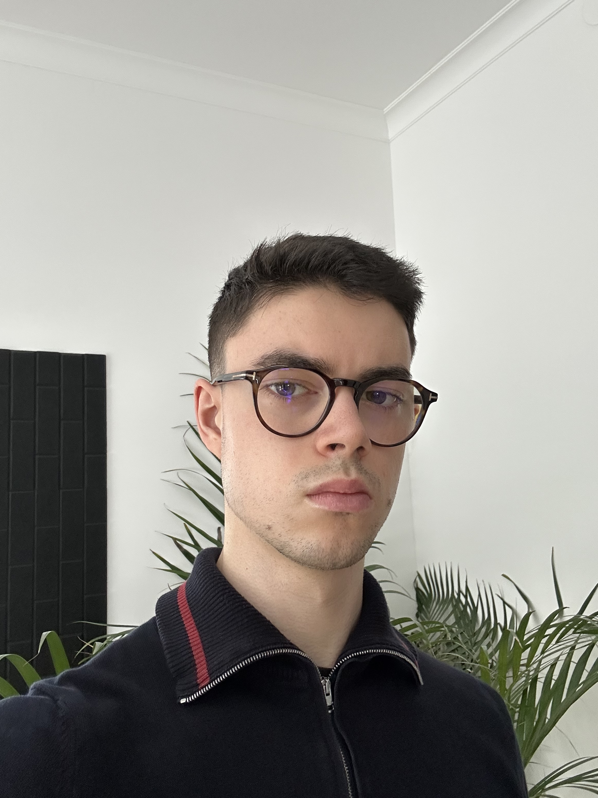

Our Purpose and Mission
Help more people improve the way they think, relate, and live.
Our mission is to make the world a better place to all of us by providing sustainable solution ideas to everyday problems, and contributing together to make them happen.
Our Focus
Mind
The world is largely shaped by human decisions, and human decisions are shaped by how people think.
Better thinking does not just mean being “smarter.” It means being more honest, patient, curious, and responsible with our judgments. Many problems get worse because people react too quickly, cling to tribal beliefs, ignore evidence, oversimplify other people, or choose short-term comfort over long-term consequences.
When people improve how they think, they are more likely to:
- Notice their own biases
- Listen before judging
- Separate facts from assumptions
- Understand complex problems instead of reducing them to slogans
- Make decisions that consider other people, not only themselves
- Admit mistakes and update their views
- Cooperate across differences
A better world requires better systems, laws, technologies, and institutions, but those are all created, maintained, and changed by people. If people think carelessly, even good tools can be misused. If people think clearly and ethically, even difficult problems become more solvable.
So improving thought is not abstract self-improvement. It is civic, moral, and practical. The quality of our shared future depends on the quality of the thinking we bring to it.
Money

Money is important because it is one of the main tools people use to meet needs, make choices, and organize society.
It helps people buy food, housing, healthcare, education, transportation, and safety. Without enough money, even simple problems become harder: a broken phone, a medical bill, or a missed paycheck can quickly turn into a crisis.
Money also gives people more freedom. It can let someone leave a bad job, move to a safer place, start a business, care for family, learn new skills, or take time to think before making desperate choices.
At the same time, money is not the same as happiness, wisdom, or worth. A person can have money and still be lonely, unhealthy, or careless. But without money, life often becomes more stressful and limited.
So money matters because it affects opportunity. It gives people stability, options, and the ability to build a better future. It should not be worshiped, but it should be understood and managed carefully, because in the real world, many parts of life depend on it.
Life

People need to improve the way they live to improve the world because the world is made from millions of daily choices.
How people spend money, treat others, use time, consume resources, raise children, handle conflict, and care for themselves all adds up. A better world is not created only by leaders, inventions, or laws. It is also created by ordinary habits repeated every day.
Improving the way we live means becoming more responsible with our actions. It means wasting less, helping more, being kinder, taking care of our health, learning instead of numbing ourselves, and choosing long-term good over short-term comfort.
When people live better, they are more likely to:
- Build healthier families and communities
- Reduce harm to the environment
- Use money and resources more wisely
- Treat other people with more respect
- Become less dependent on destructive habits
- Create stability instead of chaos around them
- Pass better values to the next generation
The world becomes better when people stop seeing “the world” as something separate from their own behavior. Society is not just governments and institutions. It is also how people live at home, at work, online, and in public.
So improving the way we live is practical and moral. A better world begins when more people make better choices in the parts of life they actually control.
Our Team
